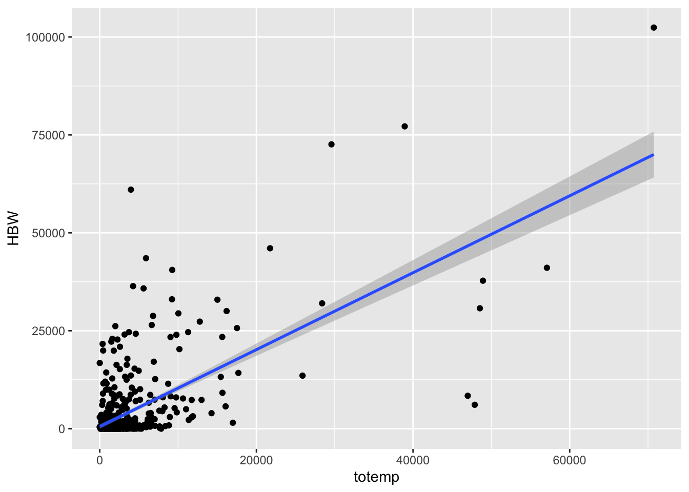
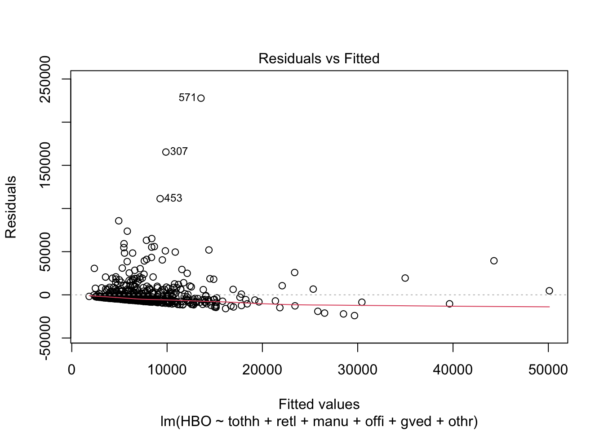

Chapter 2 Trip Generation
The details of the Trip Generation models are given in section 4.4 of NCHRP 716 and in the course notes. In this unit we will use data from both the NHTS and from the Puget Sound Regional Council (PSRC).
2.1 Trip Production
The trip production model is a cross-classification model. What this means is that we will classify households into different bins based on their household size, income, vehicle ownership, etc. We will then calculate the average number of trips made by households in each group.
We will need to get the data for households and trips. Use the records for
households in MSA size 02, that completed the survey on a weekday, and then
filter the trips to include only those records. We can also select only the data
columns that have the information we will use to classify the model. We might
need to create some or modify variables that we need to use to cross-classify;
for instance we should cap the household size category at 4 people and the
vehicles at 3.
library(tidyverse)
library(nhts2017)
hh <- nhts_households %>%
# filter to MSA size 2, travel on weekday
filter(msasize == "02", !travday %in% c("01", "07")) %>%
# select the columns we care about.
select(houseid, wthhfin, hhsize, hhvehcnt, numadlt, hhfaminc, wrkcount) %>%
mutate(
hhsize = ifelse(hhsize > 4, 4, hhsize),
hhvehcnt = ifelse(hhvehcnt > 3, 3, hhvehcnt)
)
hh## # A tibble: 10,381 x 7
## houseid wthhfin hhsize hhvehcnt numadlt hhfaminc wrkcount
## <chr> <dbl> <dbl> <dbl> <dbl> <chr+lbl> <dbl>
## 1 30000019 279. 2 2 2 03 [$15,000 to $24,999] 0
## 2 30000288 103. 1 2 1 05 [$35,000 to $49,999] 0
## 3 30000289 244. 3 3 2 07 [$75,000 to $99,999] 1
## 4 30000463 348. 2 2 2 06 [$50,000 to $74,999] 2
## 5 30000465 133. 4 2 2 08 [$100,000 to $124,999] 2
## 6 30000478 120. 2 0 2 03 [$15,000 to $24,999] 0
## 7 30000545 35.7 2 3 2 06 [$50,000 to $74,999] 2
## 8 30000770 130. 1 1 1 06 [$50,000 to $74,999] 1
## 9 30000983 147. 4 3 4 09 [$125,000 to $149,999] 1
## 10 30001177 304. 2 0 2 04 [$25,000 to $34,999] 2
## # … with 10,371 more rowsThe next step is we need to calculate how many trips the members of each
household in the data took. To do this, we can use summarise to count the number of
trip rows for each household. Then, we can pivot_wider to spread the trips
out by purpose.
trips <- nhts_trips %>%
# filter to households in the data
filter(houseid %in% hh$houseid) %>%
group_by(houseid, trippurp) %>%
# count up how many trips each household took
summarise(trips = n()) %>%
# "spread" the data, filling zero if no trips were taken
pivot_wider(id_cols = houseid, names_from = trippurp,
values_from = trips, values_fill = 0)## `summarise()` regrouping output by 'houseid' (override with `.groups` argument)## # A tibble: 9,518 x 7
## # Groups: houseid [9,518]
## houseid HBO HBSHOP NHB HBSOCREC HBW `-9`
## <chr> <int> <int> <int> <int> <int> <int>
## 1 30000019 4 0 0 0 0 0
## 2 30000288 1 1 4 0 0 0
## 3 30000289 2 4 3 1 1 0
## 4 30000463 7 2 6 0 0 0
## 5 30000465 8 2 9 0 1 0
## 6 30000478 2 0 0 0 0 0
## 7 30000545 0 2 2 4 2 0
## 8 30000770 0 3 1 0 1 0
## 9 30000983 4 0 2 1 2 0
## 10 30001177 3 2 0 2 2 0
## # … with 9,508 more rowsNow, we will join the trips data frame to the households data frame so that
everything is in one place. Note that when we do this, there will be some households
that never made any trips; we need to change their trip counts from NA to 0.
# function to change NA to 0
nato0 <- function(x) {ifelse(is.na(x), 0, x)}
tripprod <- hh %>%
# join tables by id field
left_join(trips, by = "houseid") %>%
# change all NA values in columns from the trips data to 0.a
mutate_at(vars(names(trips)), nato0)
tripprod## # A tibble: 10,381 x 13
## houseid wthhfin hhsize hhvehcnt numadlt hhfaminc wrkcount HBO HBSHOP NHB
## <chr> <dbl> <dbl> <dbl> <dbl> <chr+lb> <dbl> <dbl> <dbl> <dbl>
## 1 300000… 279. 2 2 2 03 [$15… 0 4 0 0
## 2 300002… 103. 1 2 1 05 [$35… 0 1 1 4
## 3 300002… 244. 3 3 2 07 [$75… 1 2 4 3
## 4 300004… 348. 2 2 2 06 [$50… 2 7 2 6
## 5 300004… 133. 4 2 2 08 [$10… 2 8 2 9
## 6 300004… 120. 2 0 2 03 [$15… 0 2 0 0
## 7 300005… 35.7 2 3 2 06 [$50… 2 0 2 2
## 8 300007… 130. 1 1 1 06 [$50… 1 0 3 1
## 9 300009… 147. 4 3 4 09 [$12… 1 4 0 2
## 10 300011… 304. 2 0 2 04 [$25… 2 3 2 0
## # … with 10,371 more rows, and 3 more variables: HBSOCREC <dbl>, HBW <dbl>,
## # `-9` <dbl>Now we can count up the number of trips by grouping the variables we care about and taking the average. For instance, we can get the average HBO trip rate for households by size and vehicle count. Remember to weight!
hbo_tripprod <- tripprod %>%
group_by(hhsize, hhvehcnt) %>%
summarise(
n = n(), # number of households in category
HBO = weighted.mean(HBO, wthhfin), # average HBO trips per hh
)## `summarise()` regrouping output by 'hhsize' (override with `.groups` argument)## # A tibble: 16 x 4
## # Groups: hhsize [4]
## hhsize hhvehcnt n HBO
## <dbl> <dbl> <int> <dbl>
## 1 1 0 345 0.414
## 2 1 1 2263 0.558
## 3 1 2 541 0.540
## 4 1 3 207 0.339
## 5 2 0 55 0.420
## 6 2 1 782 1.55
## 7 2 2 2472 1.15
## 8 2 3 1282 1.12
## 9 3 0 25 3.98
## 10 3 1 161 1.90
## 11 3 2 422 2.04
## 12 3 3 561 1.93
## 13 4 0 12 3.32
## 14 4 1 120 5.28
## 15 4 2 556 4.31
## 16 4 3 577 4.192.2 Trip Attraction
Trip attraction models estimate how many trips will be attracted to a particular zone. This is a function of how many jobs of different kinds are in a zone, in addition to other elements of a zone. Trip attraction models are often a linear regression model.
The NHTS cannot be used to estimate trip attraction models because we do not
know how many trips went to each TAZ; we only see the household side of the
survey. So we will use a file that I have prepared from the Puget Sound Regional
Council (PSRC, Seattle) household travel survey. This file is available on Box. You
can download it and read it directly into an R session with the read_csv() function,
psrc_attractions <- read_csv("https://byu.box.com/shared/static/7ci8vomip719bdno7xl5ftjj940dausm.csv")## Parsed with column specification:
## cols(
## attr_tract = col_double(),
## HBO = col_double(),
## HBShop = col_double(),
## HBW = col_double(),
## NHB = col_double(),
## tothh = col_double(),
## retl = col_double(),
## manu = col_double(),
## offi = col_double(),
## gved = col_double(),
## othr = col_double(),
## totemp = col_double()
## )## # A tibble: 643 x 12
## attr_tract HBO HBShop HBW NHB tothh retl manu offi gved othr
## <dbl> <dbl> <dbl> <dbl> <dbl> <dbl> <dbl> <dbl> <dbl> <dbl> <dbl>
## 1 5.30e10 8.92e3 1.02e3 6151. 4.70e2 3779 508 121 680 28 199
## 2 5.30e10 2.58e4 1.48e2 0 1.03e4 3654 146 0 605 264 117
## 3 5.30e10 3.90e1 1.30e1 0 8.50e2 1187 50 0 574 0 0
## 4 5.30e10 1.22e3 4.78e2 83.1 2.79e3 3760 385 0 773 211 99
## 5 5.30e10 5.08e3 3.53e2 0 5.30e3 2437 97 53 981 27 124
## 6 5.30e10 0. 0. 0 9.89e1 1251 0 0 96 2 93
## 7 5.30e10 9.79e3 4.22e3 1937. 3.22e4 3413 997 0 4017 527 101
## 8 5.30e10 5.66e3 3.24e1 178. 4.20e3 2222 315 0 967 19 89
## 9 5.30e10 1.65e3 1.08e0 0 2.22e3 1067 0 0 33 61 15
## 10 5.30e10 2.07e3 0. 0 4.25e0 868 0 0 80 0 5
## # … with 633 more rows, and 1 more variable: totemp <dbl>This file has, for every tract in the Seattle metro region, how many trips were attracted to the tract by purpose as well as the households and jobs by type in that tract. Let’s look at the relationship between HBW trips and total employment:
## `geom_smooth()` using formula 'y ~ x'## Warning: Removed 1 rows containing non-finite values (stat_smooth).## Warning: Removed 1 rows containing missing values (geom_point).
We can estimate a linear regression model with the lm function. In this function
we specify the model as y ~ x + ....
##
## Call:
## lm(formula = HBW ~ totemp, data = psrc_attractions)
##
## Residuals:
## Min 1Q Median 3Q Max
## -41447 -1955 -1180 -699 56593
##
## Coefficients:
## Estimate Std. Error t value Pr(>|t|)
## (Intercept) 530.34960 300.96059 1.762 0.0785 .
## totemp 0.98197 0.04386 22.388 <2e-16 ***
## ---
## Signif. codes: 0 '***' 0.001 '**' 0.01 '*' 0.05 '.' 0.1 ' ' 1
##
## Residual standard error: 6902 on 640 degrees of freedom
## (1 observation deleted due to missingness)
## Multiple R-squared: 0.4392, Adjusted R-squared: 0.4383
## F-statistic: 501.2 on 1 and 640 DF, p-value: < 2.2e-16Let’s estimate a more complex for HBO trips with many predictors.
hbo_rates <- lm(HBO ~ tothh + retl + manu + offi + gved + othr,
data = psrc_attractions)
summary(hbo_rates)##
## Call:
## lm(formula = HBO ~ tothh + retl + manu + offi + gved + othr,
## data = psrc_attractions)
##
## Residuals:
## Min 1Q Median 3Q Max
## -24039 -6216 -4083 -818 227788
##
## Coefficients:
## Estimate Std. Error t value Pr(>|t|)
## (Intercept) -394.4522 2045.5441 -0.193 0.84715
## tothh 3.0939 0.9421 3.284 0.00108 **
## retl 2.8846 1.4143 2.040 0.04180 *
## manu 1.3558 1.5214 0.891 0.37320
## offi 0.3982 0.2207 1.804 0.07165 .
## gved 0.5974 0.4671 1.279 0.20137
## othr 0.0726 0.9776 0.074 0.94082
## ---
## Signif. codes: 0 '***' 0.001 '**' 0.01 '*' 0.05 '.' 0.1 ' ' 1
##
## Residual standard error: 17030 on 635 degrees of freedom
## (1 observation deleted due to missingness)
## Multiple R-squared: 0.07254, Adjusted R-squared: 0.06378
## F-statistic: 8.278 on 6 and 635 DF, p-value: 1.199e-08The \(R^2\) statistic is not particularly good, but it really never will be with this kind of data. More important is the relationship with the residuals. It’s also not very good; there are a few outliers and quite a bit of heteroskedasticity. But there may be things we can try to make it better.

2.3 Homework
Calculate the trip rates for each purpose by household size, and by income group. Do the rates make sense? Why or why not?
Calculate the trip rates for each purpose by the number of household workers and the vehicle availability. Do the rates make sense? Why or why not?
Calculate the variance or standard deviation in work trip rates by household size / vehicles and by number of workers / vehicles. Which classification should be used for work trips?
Calculate the number of households in each classification (size / vehicles), (workers / vehicles). What information does this give you about the estimated trip rates?
Estimate trip rate attraction models for all the trip purposes. Present models with only significant or influential factors (try a few different specifications until you are satisfied with your models’ performance)
Explain your attraction rate models; do the rates make sense? Which models have the best fit in terms of \(R^2\) value? Why?
Remove the intercept from your model estimations. In R, you can do this by adding a
-1to the formula, as inlm(y ~ x - 1). Do the rates change? By how much? Should you keep the intercept in or remove it?
2.4 Lab
In this lab you will implement and calibrate trip generation rates for the RVTPO model.
2.4.1 Trip Production
The trip production rates are stored in the params/trip_prod/ folder, with a
dbf file for each trip purpose in the model. We are going to calibrate the
following trip purposes:
HBW: cross-classification model of workers and vehicles availableHBO: cross-classification model of household persons and vehicles availableHBShop: cross-classification model of household persons and vehicles available
The household travel survey for the RVTPO region reported the following total weighted trips in these trip purposes:
| Purpose | Weighted Survey Trips |
|---|---|
| HBW | 118,653 |
| HBO | 267,987 |
| HBShop | 129,614 |
Begin by running the RVTPO model through the Trip Generation
submodel. The trip productions for each trip purpose are recorded in
Base/outputs/HH_PROD.dbf. Using this file, create a report that sums the trips
produced in each of these three purposes. You can read this file in R using
the read.dbf() function in the foreign library, and then sum all columns in
this table using the summarize_all function.
# read roanoke household trip productions
rvtpo_productions <- foreign::read.dbf("data/HH_PROD.DBF") %>%
as_tibble()
# show first 10 rows
rvtpo_productions## # A tibble: 267 x 7
## TAZ HBWP NHBWP HBOP HBSCP HBSHP NHBOP
## <dbl> <dbl> <dbl> <dbl> <dbl> <dbl> <dbl>
## 1 1 199. 113. 199. 112. 199. 384.
## 2 2 38.6 22.0 38.6 21.8 38.6 74.5
## 3 3 88 50.2 88 49.7 88 170.
## 4 4 265. 151. 265. 150. 265. 512.
## 5 5 116. 65.9 116. 65.3 116. 223.
## 6 6 69.0 39.4 69.0 39.0 69.0 133.
## 7 7 26.7 15.2 26.7 15.1 26.7 51.7
## 8 8 174. 99.2 174. 98.2 174. 336.
## 9 9 82.2 46.9 82.2 46.5 82.2 159.
## 10 10 177. 101. 177. 100. 177. 343.
## # … with 257 more rows## # A tibble: 1 x 7
## TAZ HBWP NHBWP HBOP HBSCP HBSHP NHBOP
## <dbl> <dbl> <dbl> <dbl> <dbl> <dbl> <dbl>
## 1 35778 28200. 16093. 28200. 15933. 28200. 54513.Obviously the bare model is not very close to the targets. Replace the bare model rates with rates you estimated from the NHTS during your homework assignment. Run your tabulation report again, and compare the total productions to the regional targets.
Adjust the trip rates so that they replicate the regional survey targets within an acceptable margin of error. Ensure that the comparative relationship between the trip rates is maintained (i.e. households with more workers must make at least as many work trips).
2.4.2 Trip Attraction
The trip attraction rates enter into the destination choice model, but it is helpful to compare the total forecasted attractions using the rates you estimated. Apply the rates to the zonal socioeconomic data file and calculate the total number of attracted trips for each of the three purposes. Adjust the rates so that the total attractions for your three estimated purposes match the regional totals.
2.4.3 Report
Prepare a technical report describing the process by which you estimated household trip production and attraction rates, and calibrated the trip rates to reproduce regional totals. Calculate the margin of error for all purposes (not just the purposes you calibrated). Discuss how well the calibrated trip generation models replicates the survey targets, and justify your residual error. Use formatted tables to display results instead of screenshots of output.
You will be graded on the overall readability, flow, formatting and grammar in addition to how clearly you articulate the process of your work.